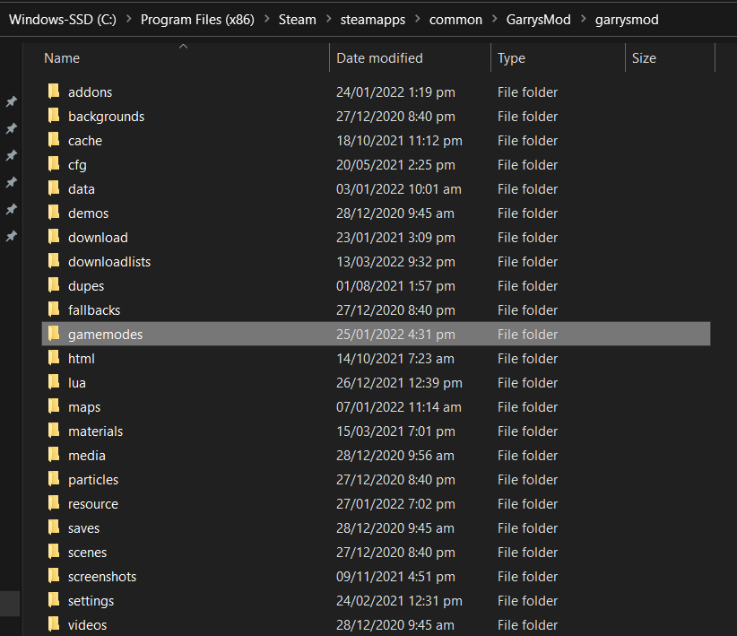
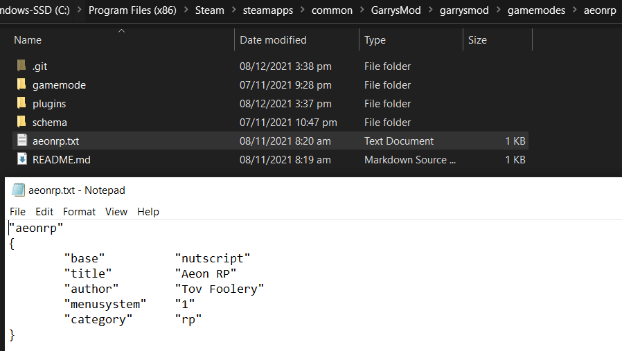

Installing the Framework and Schema
Note
The guide assumes you are installing to a dedicated server. However, NutScript can be installed and run locally on your game, and ran via the gamemode selection on the bottom right of the main menu. To locate the folder location on your local machine, open your Steam Library, right click Garry's Mod -> Properties -> Installed Files -> Browse -> garrysmod folder.
Once you have both the framework and schema downloaded, locate the gamemodes folder in your garrysmod folder. This is located in the server's root folder (where the srcds executable is located).

Installing the Framework
- Place the downloaded framework folder into the gamemodes folder.
- Rename the framework folder to nutscript. (Case is important, as most server hosts run on Linux, which is case-sensitive)
Installing the Schema
- Place the downloaded schema folder into the gamemodes folder.
- Rename the schema folder into whatever you want your gamemode to be.
- Open the schema folder and locate the .txt file. Rename it to the same name as your schema folder name.
-
Open the .txt file. It should look like this
"skeleton" { "base" "nutscript" "title" "Skeleton" "author" "Your Name" "menusystem" "1" "category" "rp" }skeletonis replaced by the name of your schematitleis the presented title of the gamemode as seen by the gamemode selection bar on the bottom-right corner of the menuauthoris the name of the schema's authormenusystemdefines whether the gamemode/server should appear in the multiplayer server list.categoryis the category the gamemode is in.
Rename the first line to the name of your schema and optionally the author. Keep the rest as is.

Congratulations, you have successfully installed NutScript
If you wish to further develop and/or modify your schema and gamemode, carry on over to Developing the Schema.